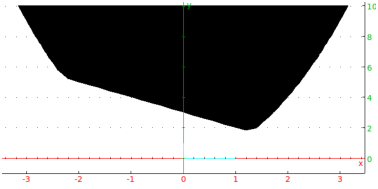

plotinequation(x^2-y^2<3, [x=-2..2,y=-2..2],xstep=0.1,ystep=0.1)
Output:

plotinequation([x+y>3,x^2<y], [x-2..2,y=-1..10],xstep=0.2,ystep=0.2)
Output:

Symbolic algebra and Mathematics with XcasRenée De Graeve, Bernard Parisse1, |
© 2002, 2007 Renée De Graeve, Bernard Parisse
renee.degraeve@wanadoo.fr
bernard.parisse@ujf-grenoble.fr
|
|
In this manual, the information that you enter is typeset in typewriter font. User input typically takes one of three forms:
When describing entering a command, specific values that you enter for arguments are in typewriter font, while argument placeholders that should be replaced by actual values are in italics. Optional arguments will be enclosed by angle brackets. For example, you can find the derivative of an expression with the diff command (see Section 6.19.4), which takes the form diff(expr ⟨,x⟩]) where expr is an expression and x is a variable or list of variables. If the optional variable is omitted, then it will default to x. A specific example is diff(x*sin(x),x).
The index uses different typefaces for different parts of the language. The commands themselves are written with normal characters, command options are written in italics and values of commands or options are written in typewriter font. For example (as you will see later), you can draw a blue parabola with the command
In the index, you will see
The giac library is a C++ mathematics library. It comes with two interfaces you can use directly; a graphical interface and a command-line interface. All interfaces can do symbolic and numeric calculations, use giac’s programming language, and have a built in help function.
The graphical interface is called Xcas, and is the most
full-featured interface. Xcas has additional help features to
make it easy to use, plus it has a built-in spreadsheet, it can do
dynamic geometry and it can do turtle graphics. The output given by
this interface is typeset; for example:
Input:
Output:
|
The command-line interface can be run inside a terminal, and in a
graphical environment can also draw graphs. The output given by this
interface is in text form; for example:
Input:
Output:
There is also a web version, which can be run through a javascript-enabled browser (it works best with Firefox), either over the internet or from local files. Other programs (for example, TeXmacs) have interfaces for the command-line version. Some of these interfaces, such as the two mentioned here, typeset their output.
The Xcas interface can run several independent calculation sessions, each session will be contained in a separate tab. Before you understand the Xcas interface, it would help to be familiar with the components of a session.
Each session can have any number of input levels. Each input level will have a number to the left of it; the number is used to identify the level. Each level can have one of the following:
If the output is a number or an expression, then it will appear in blue text in a small area below the input region; this area will be an expression editor (see Section 4.3). There will be a scrollbar and a small M to the right of this area; the M is a menu which gives you various options.
If the output is a graphic, then it will appear in a graphing area below the input region. To the right of the graphic will be a control panel which you can use to manipulate the graphic (see Section 8.2).
Levels can be moved up and down in a session, or even moved to a different session.
The level containing the cursor is the current level. The current level can be evaluated or re-evaluated by typing enter.
You can select a level (for later operations) by clicking on the number in the white box to the left of the level. Once selected, the box containing the number turns black. You can select a range of levels by clicking on the number for the beginning level, and then holding the shift key while you click on the number for the ending level.
You can copy the instructions in a range of levels by selecting the range, and then clicking the middle mouse button on the number of the target level.
When you first start Xcas, you get a largely blank window.
The first row will consist of the main menus; you can save and load Xcas sessions, configure Xcas and its interface and run various commands with entries from these menus.
The second row will contains tabs; one tab for each session that you are running in Xcas. Each tab will have the name of its session, or Unnamed if the session has no name. The first time you start Xcas, there will be only one session, which will be unnamed.
The third row will contain various buttons.
The << and >> buttons scroll through menu items. Clicking on one of the menu buttons will perform the appropriate action or replace the menu items by its submenu items. When submenu items appear, there will also be a BACK button to return to the previous menu. Clicking on the home button returns the menu buttons to the main menu.
After the menu buttons is a var button. This replaces the menu buttons by buttons representing the variables that you have defined. After that is a cust button, which displays commands that you store in a list variable CST (see section 5.4.10).
The last button, X, closes the menu bar.
Xcas is an extensive program, but using it is simplified with several different ways of getting help. The help menu (see section 3.4.4) has several submenus for various forms of help, some of which are mentioned below.
The menus provide different ways to work with Xcas and its sessions, as well as ways of inserting functions and constants into the current session. Selecting a menu item corresponding to a function or constant brings up the help index (see section 3.3) with the chosen function or constant selected.
Xcas can translate a session, or parts of a session, to other computer languages; notably LATEX and MathML.
If you enter a command into Xcas, the result will appear in the output box below the input. If you enter
then
| 4 |
will appear in the output box.
The nodisp command is used to evaluate an expression and suppress the output.
Example.
Input:
Output:
and a will be set to 4.
An alternate way of suppressing the output is to end the input with :;.
Example.
Input:
Output:
and b will be set to 6.
You can annotate an Xcas session by adding comments. You can enter a comment on the current line at any time by typing Alt+C. The line will appear in green text and conclude when you type Enter. Comments are not evaluated and so have no output. If you have started entering a command when you begin a comment, the command line with the start of the command will be pushed down so that you can finish it when you complete the comment.
You can open the browser using a comment line by entering the web address beginning with the @ sign. If you enter the comment line
| The Xcas homepage is at |
| @www-fourier.ujf-grenoble.fr/~parisse/giac.html |
then the browser will open to the Xcas home page.
To add a comment to a program, rather than a session, you can use the comment command.
Alternatively, any part of a program between // and the end of the line is a comment. So both
and
| bs():= { // Hello |
| return "Hi there!";} |
are programs with the comment "Hello".
You can enter expressions on the command line, but Xcas also has a built-in expression editor that you can use to enter expressions in two dimensions, the way they normally look when typeset. When you have an expression in the editor, you can also manipulate subexpressions apart from the entire expression.
The ans command returns the results of previous commands.
Example.
If the first command that you enter is:
Input:
resulting in
Output:
| 7 |
then later references to ans(0) will evaluate to 7.
Note that the argument to ans doesn’t correspond to the line number in Xcas. For one thing, the line numbers begin at 1. What’s more, if you go back and re-evaluate a previous line, then that will become part of the commands that ans keeps track of.
If you give ans a negative number, then it counts backwards from the current input. To get the latest output, for example, you can use ans(-1). With no argument, ans() will also return the latest output.
Similarly, the quest command returns the previous inputs. Since these will often be simplified to be the same as the output, quest(n) sometimes has the same value as ans(n).
You can also use Ctrl plus the arrow keys to scroll through previous inputs. With the cursor on the command line, Ctrl+uparrow will go backwards in the list of previous commands and display them on the current line, and Ctrl+downarrow will go forwards.
Xcas works with both real and complex numbers. The real numbers can be integers, rational numbers, floating point numbers or symbolic constants.
You can enter an integer by simply typing the digits.
Input:
Output:
| 1234321 |
Alternatively, you can enter an integer in binary (base 2) by
prefixing the digits (0 through 1) with 0b, in octal (base 8)
by prefixing the digits (0 through 7) with 0 or 0o,
and in hexadecimal (base 16) by prefixing the digits (0 through 9 and
a through f) with 0x. (See Section 6.4.1.)
Input:
Output:
| 43794 |
You can enter a rational number as the ratio of two integers.
Input:
Output:
|
The result will be put in lowest terms. If the top is a multiple of
the bottom, the result will be an integer.
Input:
Output:
| 41 |
A floating point number is regarded as an approximation to a real
number. You can enter a floating point number by writing it out with
a decimal point.
Input:
Output:
| 123.45 |
You can also enter a floating point number by
entering a sequence of digits, with an optional decimal point,
followed by e and then an integer, where the e
represents “times 10 to the following power.”
Input:
Output:
| 1234000.0 |
Floating point numbers with a large number of digits will be printed with e notation; you can control how other floats are displayed (see Section 3.5.7, item 7). An integer or rational number can be converted to a floating point number with evalf (see Section 6.8.1).
A complex number is a number of the form a+bi, where a
and b are real numbers. The numbers a and b will be the same
type of real number; one type will be converted to the other type if
necessary (an integer can be converted to a rational number or a
floating point number, and a rational number can be converted to a
floating point number).
Input:
Output:
| 3+1.1i |
Xcas has the standard constants given by built-in symbols, given in the following table.
| Symbol | Value |
| e (or %e) | the number exp(1) |
| pi (or %pi) | the number π |
| infinity | unsigned ∞ |
| +infinity (or inf) | +∞ |
| -infinity (or -inf) | −∞ |
| i (or %i) | the complex number i |
| euler_gamma | Euler’s constant γ; namely, limn→∞(∑k=1n − ln(n)) |
Since these numbers cannot be written exactly as standard decimal
numbers, they are necessarily left unevaluated in exact results (see
Section 3.5.4).
Input:
Output:
| 2π |
Input:
Output:
| 6.28318530718 |
You can also use evalf (see Section 6.8.1), for
example, to approximate one of the real-valued constants to as many
decimal places as you want.
Input:
Output:
| 3.1415926535897932384626433832795028841971693993751 |
Xcas can manage integers with unlimited precision, such as
the following (see Section 6.6.1):
Input:
Output:
| 9332621544394415268169923885626670049071596826438162 |
| 1468592963895217599993229915608941463976156518286253 |
| 697920827223758251185210916864000000000000000000000000 |
Gaussian integers are numbers of the form a+ib, where a and b are in ℤ. For most functions in this section, you can use Gaussian integers in place of integers.
A permutation p of size n is a bijection from [0..n−1] to
[0..n−1] and is represented by the list: [p(0),p(1),p(2)…
p(n−1)].
For example, the permutation p represented by [1,3,2,0] is the
function from [0,1,2,3] to [0,1,2,3] defined by:
| p(0)=1, p(1)=3, p(2)=2, p(3)=0 |
A cycle c of size p, represented by the list [a0,…,ap−1] (0≤ ak≤ n−1), is the permutation such that
| c(ai)=ai+1 for (i=0..p−2), c(ap−1)=a0, c(k)=k otherwise |
For example, the cycle c represented by the list [3,2,1] is the permutation c defined by c(3)=2, c(2)=1, c(1)=3, c(0)=0 (i.e. the permutation represented by the list [0,3,1,2]).
Note that complex numbers, as well as being numbers, are used to represent points in the plane (see Section 13.6.2). Some functions and operators which work on complex numbers also work on points.
An operator is an infixed function. For example, the arithmetic functions +, -, *, /, and ^ are operators. (See Section 6.8.2 and Section 6.10.1.)
The limit command computes limits, both at numbers and infinities, and in the real case it can compute one-sided limits.
Remark:
It is also possible to put x=a as argument instead of
x,a;
limit(expr,var=pt[,side])
is equivalent to limit(expr,var,pt[,side]).
Examples.
| −∞ |
| +∞ |
| ∞ |
Exercises.
|
| 2 |
|
| − | √ |
|
|
|
| − |
|
Xcas can evaluate the trigonometric functions in either radians or degrees (see Section 6.16.2). It can also manipulate them algebraically.
Polynomials are represented by expressions or by lists of coefficients in decreasing power order. In the first case, for instructions requiring a main variable (like extended gcd computations), the variable used by default is x if not specified. For coefficients in ℤ/nℤ, use % n for each coefficient of the list or apply it to the entire expression defining the polynomial.
The way to compute over ℤ/pℤ or over ℤ/pℤ[x] depends on the syntax mode:
Examples.
To recover an object o with integer coefficients instead of modular
coefficients, input o % 0. For example:
Input:
| o:=4%7;: |
| o%0 |
Output:
| −3 |
Remark. Most Xcas functions that work on integers or polynomials with integer coefficients will often work the same on ℤ/pℤ or ℤ/pℤ[x], with the obvious exception that the input and output will be modular. They will be listed in the remaining subsections. For some commands in ℤ/pℤ or in ℤ/pℤ[x], p must be a prime integer.
The Maple commands will be discussed in Section 6.35.
You can set Xcas to work in Maple mode rather than native Xcas mode (see Section 3.5.2).
A table is a map (associative container) used to store information associated to indices which are much more general than integers, such as strings or sequences. For example, you can use one to store a table of phone numbers indexed by names.
In Xcas, the indices in a table may be any kind of Xcas objects. Access is done by a binary search algorithm, where the sorting function first sorts by type then uses an order for each type (e.g. < for numeric types, lexicographic order for strings, etc.)
The table command creates a table.
Example.
Input:
Input:
Output:
| 20 |
Input:
Output:
| −10 |
Remark.
Tables can be created and the elements of a table can be changed using
the := assignment.
Note that most matrix factorization algorithms are implemented numerically, only a few of them will work symbolically.
See Section 6.42.1 for different norms on vectors.
An isometry of ℝn is a distance-preserving map. In ℝ2, the isometries are made up of:
In ℝ3, the isometries are made up of:
An isometry is direct if it preserves orientation (it doesn’t involve a reflection), otherwise it is indirect.
An n× n matrix A determines an isometry of the function f:ℝn→ℝn by f(x) = Ax) is an isometry. Such isometries fix the origin, so they can’t involve translation, can only rotate about the origin, and the line or plane of reflection will pass through the origin.
An isometry in ℝ2 can be characterized by:
An isometry in ℝ3 can be characterized by:
Linear programming problems involve maximizing a linear functionals under linear equality or inequality constraints. The simplest case can be solved directly by the so-called simplex algorithm. Most cases require you to solve an auxiliary linear programming problem to find an initial vertex for the simplex algorithm.
The augmented matrix of the system A · X=b is either the matrix obtained by gluing the column vector b to the right of the matrix A (as with border(A,tran(b))), representing A · X=b, or the matrix obtained by gluing the column vector −b to the right of the matrix A, representing A· x − b = 0.
This section is limited to symbolic (or exact) solutions of differential equations. For numeric solutions of differential equations, see odesolve (Section 10.3.5). For graphic representation of solutions of differential equations, see plotfield (Section 8.18), plotode (Section 8.19) and interactive_plotode (Section 8.20).
The dayofweek command finds the day of the week for any date after 15 October, 1582.
Examples.
| 3 |
| 5 |
The Gregorian calendar, the calendar used by most of the world, was introduced on 15 October 1582. Before that, the Julian calendar was used, which had a leap year every four years and so used years with an average of 365.25, which is slightly off from the actual value of about 365.242 days. To deal with this, the Gregorian calendar was introduced, where a leap year is a year which is divisible by 4, but not divisible by 100 unless it is also divisible by 400. This gives an average length of year that is accurate to within 1 day every 3000 years.
Many countries switched from the Julian calendar to the Gregorian calendar after 4 October 1582 in the Julian calendar, and the next day was 15 October 1582.
Let Γ be a curve in space parameterized by a continuously differentiable function, and M0 be a point on the curve. The curve will have an arclength parameterization; namely, it can be parameterized by a function M(s), where M(0) = M0 and |s| is the length of the curve from M0 to M(s), in the direction of the curve if s>0 and the opposite direction if s<0.
For such a Γ, the vector T(s) = M′(s) will be the unit tangent to the curve at M(s), and N(s) = T′(s) will be perpendicular to the tangent. The circle through M(s) with center at M(s) + N(s) is called the osculating circle to Γ at M(s). Informally, the osculating circle is the circle through M(s) which most closely approximates Γ. The set of all centers of curvature is another curve, called the evolute of Γ.
The radius of the osculating circle is |N(s)| and is called the radius of curvature of Γ at M(s). The reciprocal of this is called the curvature of Γ at M(s).
A curve can be described in Xcas with a parametrization or with a curve object. Various curve objects are described in chapters 13 and 14. The commands in this section can work with curves described either way. You can get the equation of a curve object with the equation command (see Section 13.13.7).
The curvature command finds the curvature of a curve. The curve can be given as an object or by a parameterization.
To find the curvature from a parameterization:
To find the curvature from a curve object:
Examples.
|
|
|
| √ |
|
The osculating_circle command finds and draws the osculating circle of a curve.
To find the osculating circle from a parameterization:
To find the osculating circle from a curve object:
Examples.
| ⎛ ⎝ | x+4 | ⎞ ⎠ | 2+ | ⎛ ⎜ ⎜ ⎝ | y− |
| ⎞ ⎟ ⎟ ⎠ |
| = |
|
| ⎛ ⎜ ⎜ ⎝ | x+ |
| ⎞ ⎟ ⎟ ⎠ |
| + | ⎛ ⎜ ⎜ ⎝ | y− |
| ⎞ ⎟ ⎟ ⎠ |
| = |
|
The evolute command finds and draws the evolute of a curve.
To find the evolute from a parameterization:
To find the evolute from a curve object:
Examples.
| 27 x2−16 y3+24 y2−12 y+2=0 |
| 16 x3−24 x2+12 x−27 y2−2=0 |
Most graph instructions take expressions as arguments. A few exceptions (mostly Maple-compatibility instructions) also accept functions. Some optional arguments, like color, thickness, can be used as optional attributes in all graphic instructions. They are described below.
If a graph depends on a user-defined function, you may want to define the function when the parameter is a formal variable. For this, it can be useful to test the type of the parameter while the function is being defined. (See Chapter Section 12 for information about programming in Xcas.)
For example, suppose f and g are defined by:
f(x):= { |
if (type(x)!=DOM_FLOAT) return 'f'(x); |
while(x>0){ x--;} |
return x; |
}
|
and
g(x):= { |
while(x>0){ x--;} |
return x; |
}:;
|
Graphing these (see Section 8.4.1):
Input:
| F:= plotfunc(f(x)) |
| G:= plotfunc(g(x)) |
they will both produce the same graph. However, the graphic
G won’t be reusable. Entering:
Input:
reproduces the graph, but entering:
Input:
produces the error:
Output:
| "Unable to eval test in loop: x>0.0 |
| Error: Bad Argument Value Error: |
| Bad Argument Value" |
Internally, F and G contain the formal expressions
f(x) and g(x), respectively. When Xcas
tries to evaluate F and G, x has no value
and so the test x > 0 produces an error in g(x), but
the line if (type(x)!=DOM_FLOAT) return 'f'(x); avoids this
problem in f(x).
A graphic screen, either two- or three-dimensional as appropriate, automatically opens in response to a graphic command. Alternatively, you can open a graphic screen with its own command line with keystrokes; Alt-g for a two-dimensional screen and Alt-h for a three-dimensional screen. The graphic screen will have an array of buttons at the top right.
The image can also be moved in the screen by clicking and dragging with the mouse. Scrolling with the mouse will also zoom the images.
There are two kinds of attributes for graphs and geometric objects: global attributes of a graphic scene and individual attributes.
The plot command is a Maple-compatible way to draw the graph of a one-variable function.
Examples.
The plot3d command is a Maple-compatible way to draw a surface. It can plot the graph of a function of two variables or a surface given by a parameterization.
To draw the graph of a function:
If func is a function, this argument is optional, and are the ranges a..b for the variables.
If the ranges are not given, the default values are taken from the graph configuration (see Section 3.5.8).
Example.
Input:
Output:
To draw a parameterized surface:
If funcs is a list of functions, this argument is optional, and are the ranges a..b for the variables.
If the ranges are not given, the default values are taken from the graph configuration (see Section 3.5.8).
Examples.
The plotinequation command plots the region of the plane where given inequalities hold.
Examples.
The area command approximates the area under a graph.
Examples.
| 0.3359375 |
| 0.333333333333 |
| 0.333333333333 |
|
The plotarea command draws the area below a graph.
areaplot is a synonym for plotarea.
Examples.
The plotcontour command draws contour lines for functions of
two variables.
DrwCtour and contourplot are synonyms for
plotcontour.
Examples.
If you want to draw the surface in 3-d representation, you can use
plotfunc (see Section 8.4.2).
Input:
Output:
The plotdensity command draws the graph of a function of two
variables in the plane where the values of z are represented by the
rainbow colors.
densityplot is a synonym for plotdensity.
Remark: A rectangle representing the scale of colors will be displayed below the graph.
Example.
Input:
Output:
The plotimplicit command draws curves or surfaces defined by an implicit expression or equation. If the option unfactored is given as the last argument, the original expression is taken unmodified. Otherwise, the expression is normalized, then replaced by the factorization of the numerator of its normalization.
Each factor of the expression corresponds to a component of the implicit curve or surface. For each factor, Xcas tests if it is of total degree less or equal to 2, in which case conic or quadric is called. Otherwise the numeric implicit solver is called.
Optional step and ranges arguments may be passed to the numeric implicit solver, note that they are dismissed for each component that is a conic or a quadric.
implicitplot is a synonym for plotimplicit.
The plotparam command draws parametric curves and surfaces.
paramplot and DrawParm are synonyms for
plotparam.
The Bezier curve with the control points P0,P1,…,Pn is the curve parameterized by ∑j=0n (
| n,j |
| t |
)j (1−t)n−j Pj. bezier plots Bezier curves.
Examples.
To get the parameterization of the curve, you can use the parameq command (see Section 13.13.8).
Examples.
| ⎛ ⎝ | 1−t | ⎞ ⎠ | 3+3 t | ⎛ ⎝ | 1−t | ⎞ ⎠ | 2 | ⎛ ⎝ | 1+i | ⎞ ⎠ | +3 t2 | ⎛ ⎝ | 1−t | ⎞ ⎠ | ⎛ ⎝ | 2+i | ⎞ ⎠ | +t3 | ⎛ ⎝ | 3−i | ⎞ ⎠ |
| ⎡ ⎣ | 2 t | ⎛ ⎝ | 1−t | ⎞ ⎠ | ,2 t | ⎛ ⎝ | 1−t | ⎞ ⎠ | +t2,t2 | ⎤ ⎦ |
The plotpolar command draws a curve given in polar
coordinates.
polarplot, DrawPol and courbe_polaire are
synonyms for plotpolar.
Examples.
The plotseq command draws the process of finding the terms of
a recurrent sequence.
seqplot and graphe_suite are synonyms for
plotseq.
Example.
Input:
Output:

The plotfield command draws the tangent field of a
differential equation or a vector field.
fieldplot is a synonym for plotfield.
To draw the tangent field of a differential equation:
Example.
Input:
Output:
To draw a vector field:
Example.
Input:
Output:
The plotode command draws solutions of differential equations.
To compute the values of the solutions, see Section 10.3.5.
Examples.
The interactive_plotode command draws interactive tangent
fields of differential equations.
interactive_odeplot is a synonym for
interactive_plotode.
You can further click to display several solutions. To stop, press the Esc key.
Example.
Input:
Output:

Solutions of the differential equation can be plotted by clicking on an initial point.
Xcas can display animated 2D, 3D or "4D" graphs. This is done first by computing a sequence of graphic objects, then after completion, by displaying the sequence in a loop. To stop or start again the animation, click on the button ▸ ∣ (to the left of Menu).
Xcas has several functions to perform statistics; the data is typically given as a list of numbers, such as A:= [0,1,2,3,4,5,6,7,8,9,10,11]. This particular list will be used in several examples. Section 6.45.16 will discuss statistics on matrices.
Real numbers may have an exact representation (e.g. rationals, symbolic expressions involving square roots or constants like π, …) or approximate representation, which means that internally the real is represented by a rational (with a denominator that is a power of the basis of the representation) close to the real. Inside Xcas, the standard scientific notation is used for approximate representation; that is a mantissa (with a point as decimal separator) optionally followed by the letter e and an integer exponent.
Note that the real number 10−4 is an exact number but 1e−4 is an approximate representation of this number.
This section discusses how real numbers are represented.
The evalf command evalf or approx, if possible, evaluates to a numeric approximation (see Section 6.8.1). The approximation is to Digits digits (see Section 3.5.1), this can be changed with an optional second argument.
Examples.
| 1.414214 |
| DIGITS:=20 |
| evalf(sqrt(2)) |
| 1.4142135623730950488 |
| 1e-05 |
| 1e+15 |
| 1.41421356237e-05 |
The fsolve command can solve equations or systems of equations. This section will discuss solving equations; systems will be discussed in the next section.
The cfsolve command is the complex version of fsolve, with the same arguments. The only difference is that cfsolve gives numeric solutions over the complex numbers, even if Xcas is not in complex mode (see Section 3.5.5). fsolve will return complex roots, but only in complex mode.
fsolve solves numeric equations of the form:
| f(x)=0, x ∈ (a,b) |
Unlike solve (Section 6.55.6) or proot
(Section 10.6), it is not limited to polynomial equations.
nSolve is a synonym for fsolve.
Examples.
| 1.0 |
| ⎡ ⎣ | −0.5−0.866025403784i,−0.5+0.866025403784i,1.0 | ⎤ ⎦ |
| ⎡ ⎣ | −0.5−0.866025403784 i,−0.5+0.866025403784 i,1.0 | ⎤ ⎦ |
| ⎡ ⎣ | ⎤ ⎦ |
| ⎡ ⎣ | 1.57079632679−1.31695789692 i,1.57079632679+1.31695789692 i | ⎤ ⎦ |
The different values of algorithm are explained in the rest of this section.
The previous section discussed using fsolve to solve equations. This section will discuss systems of equations.
As before, the cfsolve command is the complex version of fsolve, with the same arguments. The only difference is that cfsolve gives numeric solutions over the complex numbers, even if Xcas is not in complex mode (see Section 3.5.5). fsolve will return complex roots, but only in complex mode.
For solving systems of equations:
Examples.
| ⎡ ⎢ ⎣ |
| ⎤ ⎥ ⎦ |
| ⎡ ⎢ ⎢ ⎢ ⎣ |
| ⎤ ⎥ ⎥ ⎥ ⎦ |
| ⎡ ⎢ ⎢ ⎢ ⎣ |
| ⎤ ⎥ ⎥ ⎥ ⎦ |
| ⎡ ⎢ ⎢ ⎢ ⎣ |
| ⎤ ⎥ ⎥ ⎥ ⎦ |
The methods are inherited from the GSL. The methods whose names end with j_solver use the jacobian matrix, the rest use approximations for the derivatives.
All methods use an iteration of Newton kind
| xn+1=xn− |
|
The four methods hybrid*_solver use also a method of gradient descent when the Newton iteration would make a too large of a step. The length of the step is computed without scaling for hybrid_solver and hybridj_solver or with scaling (computed from f′(xn)) for hybrids_solver and hybridsj_solver.
The rest of this section will cover the various method options.
The proot command numerically finds the roots of a squarefree polynomial.
Examples.
| ⎡ ⎣ | −1.0,0.5−0.866025403784 i,0.5+0.866025403784 i | ⎤ ⎦ |
| ⎡ ⎣ | −1.73205080757,1.73205080757 | ⎤ ⎦ |
Matrix numeric factorizations of
are described in Section 6.49.
A program that you write for Xcas might be longer than one line; the first section discusses how you can enter it.
The nodisp command defines an object without displaying it.
Setting a variable to a graphic object draws the object.
Examples.
Variables should be unspecified to demonstrate a general geometric result, but need to have specific values when drawing. There are a couple of different approaches to deal with this.
One approach is to use the assume command (see Section 5.4.8). If a variable is assumed to have a value, then that value will be used in graphics but the variable will still be unspecified for calculations. For example: Input:
| assume(a = 2.1) |
| A:= point(a + i) |
Output:
but the variable a will still be treated as a variable in
calculations:
Input:
Output:
| √ |
|
Another approach would be to use the point or pointer mode in a geometry screen. If there isn’t a geometry screen showing, the command Alt-G or the Geo▸New figure 2d menu will open a screen. Clicking on the Mode button right above the graphic screen and choosing pointer or point will put the screen in pointer or point mode. If a point is defined and displayed, such as with A:= point(2.1 + i), then clicking on the name of the point (A in this case) with the right mouse button will bring up a configuration screen. As long as there is a point defined with non-symbolic values, there will be a symb box on the configuration screen. Selecting the symb box and choosing OK will be equivalent to the commands:
| assume(Ax=[2.1,-8.16901408451,8.16901408451]) |
| assume(Ay = [1, -5.0, 5.0] |
This will bring up two lines beneath the arrows to the right of the screen which can be used to change the assumed values of Ax and Ay. Also, the point A will be redefined as point(Ax,Ay).
See Section 14.7 for triangles in space.
See Section 14.8 for quadrilaterals in space.
See Section 14.9 for polygons in space.
The Alt+H command brings up a display screen for three-dimensional graphics. This screen has its own menu and command lines.
This screen also automatically appears whenever there is a three-dimensional graphic command.
The plane of vision for a three-dimensional graphic screen is perpendicular to the observer’s line of vision. The plane of vision is also indicated by dotted lines showing its intersection with the parallelepiped. The axis of vision for a three-dimensional graphic screen is
The three-dimensional graphic screen starts with the image of a parallelepiped bounding the graphics and vectors in the x, y and z directions. At the top of the screen is the equation of the plane of vision, which is a plane perpendicular to the observer’s line of vision. The plane of vision is shown graphically with dotted lines indicating where it intersects the plane of vision.
Clicking in the graphic screen outside of the parallelepiped and dragging the mouse moves the x, y and z directions relative to the observer; these directions are also changed with the x, X, y, Y, z and Z keys. Scrolling the mouse wheel moves the plane of vision along the line of vision. The in and out buttons on the graphic screen menu zoom in and out of the picture.
The graphical features available for two-dimensional graphics (see Section 13.3) are also available for three-dimensional graphics, but to see the points the markers must be squares with width (point_width) at least 3.
The graphic screen menu has a cfg button which brings up a configuration screen. Among other things, this screen has
The depictions of three-dimensional objects are made with a coordinate system Oxyz, where the x axis is horizontal and directed right, the y axis is vertical and directed up, and the z axis is perpendicular to the screen and directed out of the screen. The depictions can be transformed by changing to a different coordinate system by setting a quaternion (see Section 13.3.2).
See also sections 14.5.6 and 14.5.7 for planes perpendicular and orthogonal to lines and planes.
See Section 13.9 for quadrilaterals in the plane.
See Section 13.10 for polygons in the plane.
See Section 13.11.1 for circles in the plane.
The circle command returns and draws a circle. It can take its arguments in various ways.
Three points.
Example.
Input:
Output:
Two points and a vector.
Example.
Input:
Output:
To specify a Platonic solid, Xcas works with the center, a
vertex and a third point to specify a plane of symmetry. To speed up
calculations, it may be useful to use approximate calculations, which
can be ensured with the evalf command. For example, instead
of:
Input:
it would typically be better to use:
Input:
Xcas has commands for working with audio objects. An audio object is a vector consisting of:
Xcas can read and write audio objects as files on your computer; these files will be in the wav (Waveform Audio File) format.
For creating and playing audio objects, there are:
For reading and writing audio files, there are:
For manipulating audio objects, there are:
For getting information from an audio object, there are:
To use giac inside of a C++ program, put
#include <giac/giac.h>
at the beginning of the file. To compile the file, use
c++ -g progname.cc -lgiac -lgmp
After compiling, there will be a file a.out which can be run with the command
./a.out
For example, put the following program in a file named pgcd.cc.
// -*- compile-command: "g++ -g pgcd.cc -lgiac -lgmp" -*-
#include <giac/config.h>
#include <giac/giac.h>
using namespace std; using namespace giac;
gen pgcd(gen a,gen b){ gen q,r; for (;b!=0;){ r=irem(a,b,q); a=b; b=r;
} return a; }
int main(){ cout << "Enter 2 integers "; gen a,b; cin >> a >> b; cout
<< pgcd(a,b) << endl; return 0; }
After compiling this with
c++ -g pgcd.cc -lgiac -lgmp
and running it with
./a.out
there will be a prompt
Enter 2 integers
After entering two integers, such as with
Enter 2 integers 30 36
the result will appear:
6
New giac functions can be defined with a C++ program. All data in the program used in formal calculations needs to be gen type. A variable g can be declared to be gen type with
gen g;
In this case, g.type can have different values.
As an example, put the following program in a file called pgcd.cpp.
// -*- mode:C++ ; compile-command: "g++ -I.. -fPIC -DPIC -g -c pgcd.cpp -o pgcd.lo && \
// ln -sf pgcd.lo pgcd.o && \
// gcc -shared pgcd.lo -lc -lgiac -Wl,-soname -Wl,libpgcd.so.0 -o \
// libpgcd.so.0.0.0 && ln -sf libpgcd.so.0.0.0 libpgcd.so.0 && \
// ln -sf libpgcd.so.0.0.0 libpgcd.so" -*-
using namespace std;
#include <stdexcept>
#include <cmath>
#include <cstdlib>
#include <giac/config.h>
#include <giac/giac.h>
//#include "pgcd.h"
#ifndef NO_NAMESPACE_GIAC namespace giac { #endif // ndef
NO_NAMESPACE_GIAC
gen monpgcd(const gen & a0,const gen & b0){ gen q,r,a=a0,b=b0; for
(;b!=0;){ r=irem(a,b,q); a=b; b=r; } return a; } gen _monpgcd(const
gen & args,GIAC_CONTEXT){ if ( (args.type!=_VECT) ||
(args._VECTptr->size()!=2)) setsizeerr(); vecteur &v=*args._VECTptr;
return monpgcd(v[0],v[1]); } const string _monpgcd_s("monpgcd");
unary_function_eval __monpgcd(0,&_monpgcd,_monpgcd_s);
unary_function_ptr at_monpgcd (&__monpgcd,0,true);
#ifndef NO_NAMESPACE_GIAC } // namespace giac #endif // ndef
NO_NAMESPACE_GIAC
After compiling this with the commands after the compile-command in the header, namely
g++ -I.. -fPIC -DPIC -g -c pgcd.cpp -o pgcd.lo && \
ln -sf pgcd.lo pgcd.o && \
gcc -shared pgcd.lo -lc -lgiac -Wl,-soname -Wl,libpgcd.so.0 -o \
libpgcd.so.0.0.0 && ln -sf libpgcd.so.0.0.0 libpgcd.so.0 && \
ln -sf libpgcd.so.0.0.0 libpgcd.so
the new command can be inserted with the insmod command in
giac, where insmod takes the full absolute path of
the libpgcd.so file as argument.
Input:
Afterwords, the monpgcd command will be another giac
command.
Input:
Output:
| 6 |
This document was translated from LATEX by HEVEA.